In the previous half of Chapter 1, we have talked about the possiblities of init functions, which already gave us plenty of options for scripting particle effects.
In this second half of the chapter, we will learn how to change the spawn rates of particles, then go over some remaining sprite particle fields we have not covered yet, such as the emitter index and emitter node, acceleration vector, size ratio factor and color fading time. In particular, we will examine how you can use the emitterIndex and emitterNode fields to mimic the AddEffect feature known from TRNG, but with fully customizable effects, created by you.
The end of this chapter hosts an optional bonus section that showcases some neat tricks made possible with a bit of math to generate various spatial arrangements and spawning patterns for particles. This last section is mainly for those readers who have a knack for mathematics, so if you are not very interested in topics of 2D and 3D geometry or parametric equations, feel free to skip it and head directly to the next chapter.
Note: this section is a tad more challenging and may take some resilience to get through it. However, I strongly believe the payoff with what you learn thanks to it makes this worth it, don’t skip this one!
Though this is also a subjective matter, I think the way our dust particles spawn at the moment is a bit too “concentrated”. Perhaps the particles should be spread out more, to cover a larger area (you may disagree with me, like I said it’s subjective). Regardless if you agree or not, I will tell you about the ways to modify the particle density and spawn rate, for when it becomes necessary.
We can do one of the following, or both:
spread out the dimensions of the volume in which particles can spawn (by increasing the random range of the position randomizing variables dx, dy, dz in our script);
make the particles spawn less frequently (i.e. not on every frame).
Spreading out the spawn dimensions
The first point should seem rather straightforward, we can do that by increasing the range of the dx, dy, dz variables for generating the random numbers we add to the position vector. To make the particles cover a larger area, we simply change the min-max range in the randfloat() calls. Let’s try increasing it to (-1024, 1024) for dx and dz, making the effective volume a box of dimensions 2048 x 1024 x 2048.
local dx = randfloat(-1024, 1024) -- 2048 total
local dy = randfloat(-512, 512) -- 1024 total
local dz = randfloat(-1024, 1024) -- 2048 total
Easy-peasy. Now, the same amount of particles spawns as before (1 per frame), but the volume in which they spawn became bigger. Hence, there is a smaller average density of particles per unit of space.
The second point is not so trivial – how could we make particles spawn less often? As we know the init function is being called once a frame, after all.
Though it’s true that the init function will be called once per frame (generally speaking, there is a specific particle group setting which prevents it), I never said it necessarily must spawn a particle on each of those frames, did I?
Recall the Lua Crash Course section on if conditions. You will greatly benefit from refreshing this knowledge, if you are not up to speed with that aspect of Lua.
Probability-based spawn rates
Random number functions can also be used for determining probabilistic outcomes. Specifically, I’m referring to randint() for this purpose. What would happen if we spawned a new particle, but only under the condition that the result of randint(1, 6) was equal to 3, for example? We would get a 1 in 6 chance of the particle spawning a given frame, the same as with rolling out a 3 on a die (“die” here being the singular form of “dice”). Or perhaps randint(1, 2) being equal to 1, as with a coin flip (“heads” or “tails”) that resulted in “heads”. To make room for this element of chance, we must make some small alterations to the code around spawning the particle.
The main idea is to have a variable to which we assign a random integer in a range, for example 1 through 6. We’ll give it the descriptive name dice. To this variable we assign the result of randint(1, 6), which will be our random integer between 1 and 6.
local dice = randint(1, 6)
I will proceed to describe how we can construct our if conditional statement around the dice variable. There are in fact two ways of reasoning about it, both leading to the same outcome.
First of all, we should establish the condition – when should our particle spawn? Whenever we “roll out” a 1 with dice, for instance. It wouldn’t matter if we chose 2, 3, 4, 5 or 6 instead, since there should be an equal probability that we get any of these six outcomes, if the die is fair.
As for the two ways of writing the if condition, we can perceive it from two complimentary perspectives:
we want to spawn the particle only if the value of dice is 1 (dice == 1)
we want to skip further execution of the function (which includes spawning the particle) if the value of dice is greater than 1 (dice > 1).
I hope it makes sense to you how both of these viewpoints effectively lead to the same outcome and are equivalent to each other.
Let’s analyze setting up the if condition by following the sentiment of the first perspective. We need the if keyword to begin the conditional statement. Next we describe the condition: dice == 1. At the end of the line, we put then:
local function dustInit()
local dice = randint(1, 6)
if dice == 1 then -- if we rolled out a 1
local part = createSpritePart(dustgroup) -- create a sprite particle of the "dust" group
-- remaining init code --
end
What follows after the then keyword becomes a code block belonging to the if statement, up until first encountered end keyword is reached. We would now need to place everything related to spawning the particle (creating the new particle instance and initializing the fields) inside the code block of the if condition. Now, there is a very lazy way to do this, which involves simply placing an extra end keyword before the end that terminates the dustInit() function. Remember, Lua does not care about whitespaces (unlike the Python programming language, for instance), it only cares that the code-block is somewhere between the then and end keywords:
local function dustInit()
local dice = randint(1, 6)
if dice == 1 then -- if we rolled out a 1
local part = createSpritePart(dustgroup) -- create a sprite particle of the "dust" group
-- remaining init code --
end -- end terminating if code block
end -- end terminating dustInit() function
However, on top of this being lazy (which I do not mind at all), I consider it quite ugly and unintelligble (which I do mind, actually). On the other hand, making this code more readable would require adding a lot of whitespace indentation to several lines, which I don’t want to do, either. Which will prevail, tidyness or laziness?
I have a smarter solution that will leave dustInit() itself intact (requiring no changes), but that still allows us to change how frequently the particle gets spawned. Let’s add a completely new function belowdustInit(). We can name it something like dustInit_chance() (or whatever tickles your fancy):
local function dustInit()
local dice = randint(1, 6)
if dice == 1 then -- if we rolled out a 1
local part = createSpritePart(dustgrpup) -- create a sprite particle of the "dust" group
-- remaining init code --
end
local function dustInit_chance() -- our new function
end
We will move the dice variable and if condition from dustInit() into this new function, then remove it from the old function, reverting it to its original state:
local function dustInit()
local part = createSpritePart(dustgroup) -- create a sprite particle of the "dust" group
-- remaining init code --
end
local function dustInit_chance()
local dice = randint(1, 6)
if dice == 1 then -- if we rolled out a 1
end
In the if condition block that’s now inside dustInit_chance(), we call our original dustInit() function from above. Then we terminate the if condition block with the end keyword:
local function dustInit_chance()
local dice = randint(1, 6)
if dice == 1 then -- if we rolled out a 1
dustInit() -- call our original init function
end
end
One last thing needed to make this work is to replace the dustInit function in createGroup(dustInit, nil) with our new dustInit_chance function.
dustgroup = createGroup(dustInit_chance, nil) -- swapping out original dustInit function with dustInit_chance
Now all that’s left is to try it out in-game.
The spawn rate of the particles has definitely gone down. A bit too much, perhaps. Back in our dustInit_chance(), we can decrease the randint() range on dice from (1, 6) to (1, 2). This should now result in a 50/50 likelyhood of spawning the particle. If we really want to, we can also change the name of the variable to coin to reflect that.
local function dustInit_chance()
local coin = randint(1, 2)
if coin == 1 then -- if we got "heads" on the coin
dustInit() -- call our original init function
end
end
Nice, that’s closer to what I had in mind.
This method of checking a randomly generated integer is based on probability. It results in an average spawn rate of about 1 particle per 6 frames for the “dice” probability (or 1 particle in 2 frames for the “coin” probability). This is only true when averaged out over a certain period of time, though. In one exact moment, it’s not possible to determine if we get a particle to spawn or not. There’s a very small, but still possible chance to get 8 frames with spawned particles in a row or no particles for 10 consecutive frames, even if the probability suggests an equal outcome. Such sequences, though rare and tend to average out in the long run, are unavoidable with statistical probabilities, where events occur only with chance.
What if we do not want such probabilistic outcomes based on chance? Is there way to make an event occur with a consistent, precise interval, e.g. where we are guaranteed to get exactly 1 particle spawned every 15 frames? Yes, this can also be accomplished.
One way to do it is by using an API function called getGameTick(). This function does not accept any arguments and returns the number of game ticks (frames) that have elapsed in-game since starting the current level (reminder that the TRLE engine runs at a constant 30 fps, so 1 second passes every increment of 30 game ticks). The tick counter doesn’t go up while in the inventory or pause screens. It resets to 0 when a new level is loaded and starts counting up again. It’s also saved in save games and reverted back to the saved value after reloading. Effectively, it behaves like a “clock” that measures how much game ticks passed since starting the current level. Whenever we want something in an effect to depend on the passage of time, we can reliably use the getGameTick() function. Right now, we can use it for spawning particles in a rigid interval.
The getGameTick() will return the elapsed number of ticks since the level began. But that alone will not get us where we want. We still have to do something with that value, which will result in a particle spawning once every certain number of frames. Let’s a look at the table of available arithmetic operators for a moment. We are looking for an operator that can return the remainder of dividing one number by another. The modulo operator % seems to fit the description, right?
The idea here is rather simple, we perform a remainder (or modulo) on the value returned by getGameTick(), where the dividend (the number to the right of the modulo operator) is the desired spawn interval, in frames.
We will adapt our existing dustInit_chance() function, making certain changes to it. We may rename our dice / coin variable to tick. Let’s go for a spawn interval of 1 particle per 15 frames, or one every half-second (since there are 30 frames to a second in this engine). We make the following changes:
local function dustInit_chance() -- take the tick counter value and get remainder from division by 15 (our interval)
local tick = getGameTick() % 15
if tick == 0 then -- on every 15th frame
dustInit() -- call our original init function
end
end
If you are unsure of what the modulo operation is doing, it will return the remainder (the “leftover”) of dividing the game tick counter by 15. This remainder is a value between 0 and 14 (inclusive) and it gets assigned to tick. When we check if tick is equal to a specific value in the range of the remainder, such as 0, this condition will be true exactly once every 15 ticks.
After running the level, we see that the particle is indeed spawned precisely every 15 frames, or once per half-second. You can easily get any other interval, all you need to do is change the integer to the right of the modulo operator.
The interval() function
There is an even easier way to spawn a particle on every Nth frame. It is an API function named interval(), the purpose of which is precisely to do some action once every given number of ticks. The function takes a mandatory first argument, the number of ticks in the interval. This has to be a positive integer (which makes perfect sense, an interval must be at least 1 frame long). The function returs a boolean value, true if the current game tick is divisible by the first integer given to interval() (e.g. if we use 15, it will be true on the 0 tick (immediately after launching the level) and then every 15th tick). In any other case, the returned boolean is false. With interval(), we can convert the code of dustInit_chance() to the following:
local function dustInit_chance()
if interval(15) then -- on every 15th frame
dustInit() -- call our original init function
end
end
And the result will be identical to the previous version with getGameTick() and the modulo operator, just sparing us a couple steps.
The interval() function can also take an optional second argument. Also an integer, but in the range between 0 and the first interval argument. This second argument serves to offset the tick timer by the given number of ticks. Effectively, this allows to delay the interval check by the specified number of frames. Going with our example again, if we use interval(15, 1), the interval function will return true 1 tick later than interval(15) or the equivalent interval(15, 0). Likewise, interval(15, 5) returns true 5 ticks later, interval(15, 10) returns true 10 ticks later, and so on. This can be useful to set up a sequence, where in a given interval, you trigger something on the 1st, 5th, 9th and 14th frame, in sequence:
if interval(15, 1) then -- on 1st frame -- do 1st thing
elseif interval(15, 5) then -- on 5th frame -- do 2nd thing
elseif interval(15, 9) then -- on 9th frame -- do 3rd thing
elseif interval(15, 14) then -- on 14th frame -- do 4th thing
end
And such a sequence repeats itself every 15 frames, according to the first number in the interval() function call.
Spawning multiple particles per frame
To make our life easier for limiting particle spawn rate, we have written a “master” function, dustInit_chance(), which decides when to spawn a dust particle and calls the original dustInit() function to spawn one. Meanwhile, the only job of dustInit() is to spawn and initialize a single new particle of the dust group. This method of distributing one job per function is a stellar approach, indicative of well-written code. This is because you can easily tell what each function is responsible for, when you know it only has a single job (also naming your functions appropriately with their performed tasks massively helps with this). On the contrary, if we squeeze everything together into one big function, it obscures the whole picture and you would have to remember this “monster” function does many jobs, some of which are not really related to the name of the function.
Of course, we had a rather trivial example here. In programming practice, this one-job-only rule isn’t something that can always be enforced reliably, there are always edge cases and uncertainties of what constitutes a “single job”. As a general guideline, though, you should prefer to write each function with (ideally) one task in mind. If the task consists of several smaller tasks, you isolate the tasks into smaller functions and call them each from the bigger function (within reason, of course). This results in cleaner and more elegant code. As a reminder, functions exist specifically to reduce repetition and help to code things more efficiently.
Anyway, once we have realized that the dustInit() function is an executable unit that spawns a single dust particle on demand, it’s trivial to modify dustInit_chance() again, this time to spawn several particles per frame. You simply call dustInit() however many times is required inside the master dustInit_chance(). Should you need to spawn particles in the tens, hundreds, or in some randomized amount, preferably use for loops. For just 3 particles, repeating the function call three times in a row is hardly the worst thing in the world.
local function dustInit_chance() -- spawn 3 dust particles per frame
dustInit()
dustInit()
dustInit()
end
And that’s all there is to it. We can see the clear benefit from modularizing code into functions that each perform a single task. This way, you may use that one function several times in different places, instead of copy-pasting and adapting the same code snippet over and over. This becomes even more apparent when the particles must be spawned in bursts, batches, in a particular time pattern or under highly specific conditions.
Okay, time for a moment of honesty. The original spawn rate of 1 particle per frame did not bother me at all. This whole section was just my cunning, evil trickery to explain how you can modify the particle spawn rates! Muahahahaha!
Nonetheless, I hope that after working through all these examples, you know how you can decrease or increase the frequency of not only particle spawning, but any kind of event. Both the probability-based and interval-based approach will be making an appearance again in later chapters, but we will really be needing it then (really, I promise)!
You can keep using the dustInit_chance() function if you indeed want a modified spawn rate of the dust particles, otherwise we can just restore the good old dustInit in the call to createGroup().
dustgroup = createGroup(dustInit, nil) -- restoring the original dustInit function
When we were giving our particles a position back in the first half of Chapter 1, we grabbed the absolute coordinates of Lara from some spot in the level. You might agree this is a rather tedious, mundane process. Specifying position this way is not very flexible, either. What if we want to change the position of the effect?
Do we keep grabbing new coordinates with Lara in DOZY mode? Or what if we want to spawn our dust particles in a second spot, do we need to replicate the dustInit() function, but with changed XYZ coordinates?
No, this would be a ridiculously tedious thing to do whenever we want to place the same effect somewhere else in the level.
If you are familiar with how FLEP smoke emitters work, you are aware that they are spawned from placed SMOKE_EMITTER_WHITE and SMOKE_EMITTER_BLACK nullmesh objects, with the particle properties depending on the settings of a given OCB number in the patch. Anyway, this allowed to spawn the particles depending on where the emitter nullmesh was placed, and the nullmesh emitted particles after getting triggered. This emitter system seems more convenient, since it allows you to place the same effect in several spots. It would be awesome if we could have that approach available with our dust particles, wouldn’t it?
It’s obvious where I’m going with this, so let’s cut to the chase.
Relative spawn positions with emitter index
The particles from this plugin have two specific properties / fields that deal with this exact sort of thing, the part.emitterIndex and the part.emitterNode. In this section, I will focus on explaining part.emitterIndex first.
Specifying an part.emitterIndex in the init function ties the particle’s position to an emitter item.
What is this emitter item, you ask? It can be any moveable object in the level. Yes, you heard me correctly, any moveable item can serve as the particle emitter. It does not have to be a nullmesh, it can be an enemy, it can be a trap, pushblock, pickup or animating. It can even be Lara herself.
What kind of index does this emitterIndex field expect, though? It is sadly not the NG script index, which was probably your first thought, but rather the internal Tomb4 item index (there are specific reasons for this, Tomb4 indices are more general-purpose). However, do not fret, as the API has a function that resolves this easily. The function getTombIndex() takes an integer value of the NG index for the moveable and converts it to the corresponding Tomb4 item index (if a moveable with the given NG index exists, otherwise it returns -1 for an invalid item).
Differently than other fields, the uninitialized part.emitterIndex field starts out with value -1 and not 0. This is because 0 is also a valid Tomb4 index that any item in the level could have. If part.emitterIndex has the default -1 value, the position coordinates given to the particle are interpreted as global (absolute) coordinates in the level. On the other hand, when it is set to a valid item index in the init function, the particle’s position coordinates will be relative to that item (this is not the whole truth on the matter though, the full picture will be revealed later).
To illustrate this with a specific example, if the particle has been assigned position coordinates (X= 256, Y= -768, Z= 512), the particle will be offset by those position coordinates from the emitter item’s current position, e.g. (X= 1024, Y= 0, Z= 2048). When determining where the particle actually appears, the particle position vector is added to the emitter item’s position: (X= (1024 + 256), Y= (0 - 768), Z= (2048 + 512)). If the part.emitterIndex is not set to a valid index, though, the particle will normally spawn at the global world coordinates (X= 256, Y= -768, Z= 512).
This simplifies setting particle positions considerably, as it is enough to specify the emitterIndex and the offsets from the emitter’s position in the particle’s part.pos vector, the particle system will work out the rest. This permits to achieve something similar to FLEP particle emitting nullmeshes. And what’s more, it works for any moveable item, not just SMOKE_EMITTERs. This means you can have enemies or Lara spawning particles into the level, without the need for funny workarounds, like copying the item position to the emitter nullmesh with TRNG scripts. Cool!
Of course, there is more to the FLEP smoke emitters than simply spawning some particles in the vicinity of the nullmesh. Which particles are spawned is determined by the OCB number of the nullmesh. Also, the FLEP particles spawn only when the emitter nullmesh has been activated by a trigger and thus can be untriggered to deactivate the particles. This is perfectly possible to recreate in the particle system as well, but it’s a topic for the later chapters, where we will delve into getting a moveable item’s properties, such as the OCB or checking its activation status (triggered / untriggered).
Using the emitterIndex field
I will signal only the very basics of using part.emitterIndex for now, which is making the particles spawn at a selected object’s position. Let’s say we have an nullmesh item placed somewhere, such as a CAMERA_TARGET (or any other moveable item, for that matter). What must we do to get the dust particles to spawn around it?
We must get its NG script index value first. In NGLE, this is the number in parentheses ( ) visible when highlighting a placed object. In TE, this is displayed as the ID value in square brackets when an object is selected, e.g. [ID = 12].
We take this number and pass it as an argument to the getTombIndex() function. We then assign this to the part.emitterIndex field.
part.emitterIndex = getTombIndex(12) -- get tomb4 item index of item with NG index 12
There is one more thing we should do, which is removing the old coordinates written down from Diagnostics. They are no longer needed, as the particle system calculates the global spawn position by itself when the part.emitterIndex gets specified. We simply assign the random values of dx, dy and dz variables directly to the part.pos vector. Here is how the whole init function will look like:
local function dustInit()
local part = createSpritePart(dustgroup) -- create a sprite particle of the "dust" group
part.emitterIndex = getTombIndex(12) -- get tomb4 item index of item with NG index 12
part.lifeSpan = 30 * 4 -- 30 frames * 4 = 4 seconds
part.sizeStart = randint(150, 300)
part.sizeEnd = part.sizeStart * 3 -- make dust slowly expand over time
part.spriteIndex = 0 -- "smoke" sprite texture
part.fadeIn = 30 -- fade in for 1 second
part.fadeOut = 30 -- fade out for 1 second
-- randomize rot and rotVel
local degrees = randint(0, 359)
part.rot = degToRad(degrees)
-- generate a random float between 2 and 4, negate it half of the time
local rotspeed = randomNegate(randfloat(2, 4))
part.rotVel = degToRad(rotspeed)
end
once we try it out, we should see the dust particles spawn around our chosen object.
As one more little trick, I will show you how to get this particle effect to follow Lara wherever she goes. Yes, we could just write down the NG index of the LARA object from the level map and call getTombIndex() on it, that will work. But specifically for our dear Lara, you don’t need to do this. The API provides the getLaraIndex() function which returns the Tomb4 index of Lara directly, without the need for the getTombIndex() function. All you need to do is make this small change:
part.emitterIndex = getLaraIndex() -- get Lara's item index
We obtain a cloud of dust particles that constantly spawn in Lara’s vicinity based on where she is.
Addendum on the dust effect
Although we had some hiccups at first, we have created a rather decent “dust cloud” in the end. This can be used as-is, or serve as a very good template for creating other modules in the future. For a moment, we are going to set this dust module aside, switching our focus to other topics temporarily.
Some of you may perhaps be somewhat disappointed, having imagined a different kind of “dust” effect. One that would be more suited for the interior of an old house instead of a desert or ancient tomb. If you’re not content with the one we’ve made together in the previous sections, try this one out, my treat!
local function dustInit()
local part = createSpritePart(dustgroup) -- create a sprite particle of the "dust" group
part.spriteIndex = 14 -- "dot" sprite texture
part.fadeIn = 30 -- fade in for 1 second
part.fadeOut = 30 -- fade out for 1 second
-- randomize rot and rotVel
local degrees = randint(0, 359)
part.rot = degToRad(degrees)
-- generate a random float between 2 and 4, negate it half of the time
local rotspeed = randomNegate(randfloat(2, 4))
part.rotVel = degToRad(rotspeed)
end
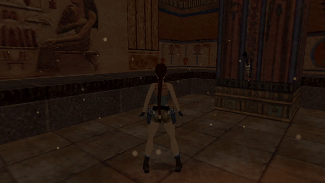
This is a very different interpretation of a “dust effect”. It has a much smaller particle size, a slightly dimmer color, a larger spawning domain (4096 x 2048 x 4096) and uses a different sprite texture (14 instead of 0). Since it follows Lara around, I think it can be an acceptable “room dust” effect, would you agree? Feel free to use it in levels and tweak it to your liking!
The previous section dealt with spawning particles in the vicinity of specific object via part.emitterIndex. When using this field, the positions received by the particles are offset from the base position of the chosen emitter moveable (where the object is currently located in the level map). The base position (pivot point) depends on the object, e.g. for Lara it’s down at the ground level (well, when she’s on the ground, at least). We can of course make offsets from this pivot point, but it is not an ideal solution in every case.
Emitting particles around meshes
Say we would like to spawn particles near a specific mesh of a moveable, like Lara’s or an enemy’s. We could maybe try offsetting the positions “by hand” so that the particles appear near the desired mesh. However, this is not always a reliable method. To understand why, let’s picture the following situation:
We would like to spawn some particles near Lara’s head mesh (at index 14). While Lara is standing, with trial and error we obtain the offset coordinates, which could be something like XYZ(0, -740, 0). These coordinates should be correct when Lara is upright. But now imagine she goes into the crawling animations. Are the previous offsets XYZ(0, -740, 0) still valid in this case? Obviously not, as Lara’s head is now much lower on the Y axis and is even protruded a bit forward. Surely, we need a system which can spawn particles not only at the position of a given object, but also at the exact position of a specified mesh of the object, respecting also the rotation.
Indeed, such a system exists, and that’s precisely what the part.emitterNode field is for. This field works in tandem with the part.emitterIndex field we have already learned about in the previous section.
The emitterNode field can hold an integer between 0 and 31, indicating the mesh index (32 is the maximum of rendered meshes a moveable can have, thus the heighest possible index is 31). It can also hold the special value -1, indicating no mesh index. It is only functional when a valid emitterIndex has also been specified, otherwise it’s simply ignored. Additionally, if the value for emitterNode is larger than the heighest mesh index on the given moveable item, the part.emitterNode value will be clamped to the actual highest mesh index (so effectively, the range goes from 0 to the total number of meshes of the moveable’s object slot).
If part.emitterNode is specified (along with a valid part.emitterIndex), the particle position offsets are based around the chosen mesh of the moveable. These offsets also involve the rotation of the mesh in various animations, meaning that the ultimate particle position offset depends on both position and rotation the mesh.
Replicating AddEffect with emitterNode
If you have ever used the AddEffect= command in TRNG, hopefully you immediately see the connections between that feature and the part.emitterNode functionality. One huge difference when compared to AddEffect= is that you are not limited to a selected set of particles, like flames, smoke or waterfall mist. You have the freedom to define any kind of particle effect you can come up with, with any color, sprite, size, position, etc. Therefore it is much more versatile than TRNG AddEffects, being more generalized and flexible.
Here is a quick example script demonstrating a simple effect that sets our poor Lara’s head on fire. We use the handy getLaraIndex() to set Lara’s Tomb4 index to the part.emitterIndex field. The head mesh is at index 14 in the LARA / LARA_SKIN slot and that’s what we put in the part.emitterNode field. The particle effect is a flame effect with the standard fire sprite (0), but I made it blue-colored just for the sake of demonstrating the customizability.
local firehead
local function fireheadInit()
local part = createSpritePart(firehead)
part.emitterIndex = getLaraIndex()
part.emitterNode = 14 -- Lara's head mesh
part.rot = degToRad(randint(0, 359))
part.rotVel = degToRad(randomNegate(randfloat(4, 8)))
end
firehead = createGroup(fireheadInit, nil)
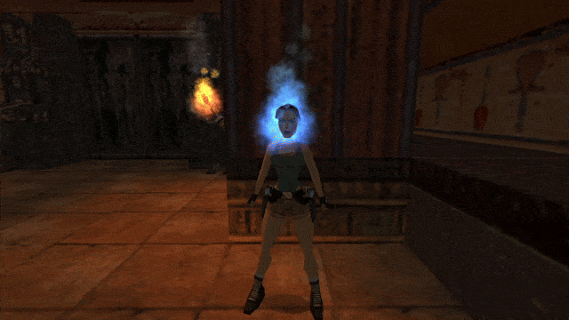
Of course, part.emitterNode, like pretty much any other particle field, can also be assigned a random value. The highest mesh number in the LARA slot is the head mesh 14, so we can assign any random integer between 0 and 14. Try it!
part.emitterNode = randint(0, 14)
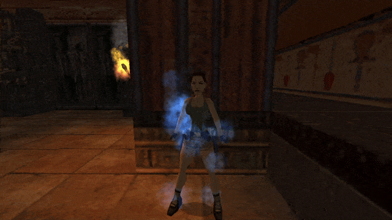
Now that’s something you couldn’t easily pull off with AddEffects! We will revisit this randomized mesh approach later, to generalize Lara’s “on fire” burning effect to various enemy slots.
Acceleration is the third vector property posessed by particles, after position and velocity.
The same way velocity is the change to position over time, acceleration is the change to velocity over time. On each frame, any non zero acceleration on any axis is applied cumulatively to velocity (just as velocity is applied cumulatively to position each frame). But what is acceleration even useful for? In physics, acceleration is generally the result of some force acting on an object. If an object is motionless or moving at a constant velocity in a straight line, we say it does not experience any acceleration. This can be either because no force is acting upon it or because all of the forces are mutually cancelling themselves out, resulting in a net force of zero. Differently, if an object changes its speed, curves or starts moving in a different direction, it is due to acceleration.
How to understand acceleration
The most approachable and easy to understand example for accelaration is that of gravity making an object fall to the ground. In this case, the force of Earth’s gravity pulls the object towards the ground, resulting in downwards acceleration (this is of course Newton’s understanding of gravity, Einstein’s general relativity views it instead as the warping of space-time caused by mass, but I digress). Of course, acceleration is a 3D vector, meaning we are not limited to just the force of gravity pointing downwards, but we can imagine other scenarios where an object accelerates or decelerates in some direction, due to some force acting upon it (not only gravity).
Another easily understood example is that of driving a vehicle: hitting the gas pedal makes the vehicle accelerate, hitting the brakes makes it decelerate. Steering the vehicle left and right is also a form of acceleration, in fact (change in direction = change in velocity = acceleration)!
If a round object slows down to a halt when rolling on a flat surface, it is because the friction force vector (which opposes the velocity vector) makes it slowly decelerate until coming to a rest. If the object drops into a liquid, then we have the force of buoyancy trying to push the object upwards, against gravity pulling it downwards. If the object is less dense than the surrounding liquid (if the mass of the object is less than the mass of the liquid displaced by the object), it will float to the top (buoyancy wins). Otherwise if it’s more dense, it will sink to the bottom (gravity wins). Additionally, in liquids, objects tend to move slower than in air. This is another manifestation of friction, slowing the object down. For this reason, items reach a constant moving speed faster when moving through liquids than through air (the increased friction cancels any further acceleration on the object). These are all examples of various forces acting and counter-acting on objects, resulting in acceleration and deceleration of objects in motion.
Acceleration is also what makes objects take a curved trajectory through space. Objects experiencing zero acceleration will always move in a straight line (or in the special case where velocity is also zero, remain motionless). Going again with gravity, imagine throwing a ball forwards. If there was no gravity, it would fly straight ahead. However, gravity makes it curve away from this straight path, landing on the ground. This curving due to gravitational acceleration is also what keeps planets in orbit around the sun. They are constantly accelerating around it, yet not falling towards it!
Particle acceleration vector
In the particle system, a particle’s acceleration vector can be accessed through the part.accel field. Similarly to part.pos and part.vel, it is a 3D vector with X, Y and Z components:
part.accel.x -- X acceleration
part.accel.y -- Y acceleration
part.accel.z -- Z acceleration
The most frequent (but not exclusive) use for acceleration is to simulate gravity acting on particles. The TR engine has a gravity constant of 6 units per frame. Falling items (e.g. Lara, rollingballs, grenades, flares, gunshells) whilst falling, all accelerate at a rate of 6 units per frame. This simply means that 6 is added to the falling item’s Y velocity each frame. Therefore, if you want to match the TR engine gravity with particles, you can use a positive part.accel.y of 6, whilst keeping the X and Z components at the default 0:
part.accel.y = 6 -- TR engine gravity
Particles by themselves do not check collision with room geometry, hence if you try this, you will see particles falling through the floor. We will learn how we can make particles collide with and bounce off of floors and walls, once we get to particle functions in the next chapter.
Acceleration “slowdown” trick
I will not elaborate further on topic of acceleration, if you understood everything above, there is not much else to add. Surely, you will figure out your own uses for setting acceleration on particles. However, I would like to show a neat little trick you can set up in the init function, which is making particles start out with a fast initial speed and gradually slow down, reaching a stop at the end of their life. If we give particles randomized velocities and random part.lifeSpan:
or more concisely, by using vector arithmetic (this will be covered in later chapters):
part.accel = -part.vel * (1 / part.lifeSpan)
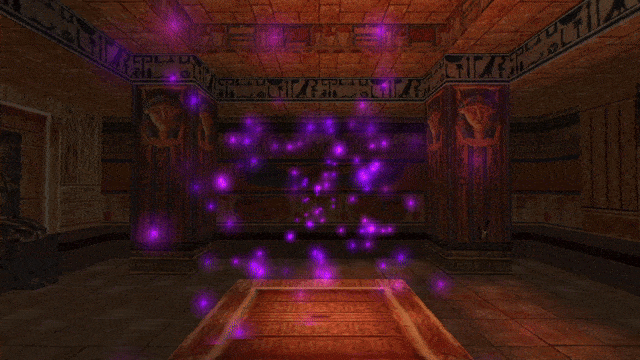
As a result, we’ll obtain particles that start out fast, but will slow down completely as they reach the end of their life span (there’s a metaphor for something somewhere in there…). This results in a kind of “friction” in the particle motion. Note that this is not physically accurate friction, but it’s close enough for most purposes. This trick will work regardless of the particle’s starting velocity and life. Due to the calculated acceleration values, the particles, by definition, will always reach 0 velocity as they die. However, this will no longer work if the velocity changes in the update function. For that, there is another “friction” technique, which will be demonstrated in the chapter about update functions.
Recall when I was explaining how particle size works for sprite particles. What I mean is the notion of the “particle square”, i.e. the square on which the sprite texture is mapped onto. The particle size refers to the size of this square. I was not really telling the full story, though… more generally, the sprites are mapped onto rectangles. A square is simply a special case of a rectangle, where all its four sides are the same length.
Immediate question – is there something about a particle that determines whether it will be a square or rectangle? As a matter of fact, there is! The particle field part.sizeRatio controls the proportions of the rectangle onto which the particle texture is mapped. It holds a floating point number between -1 and 1, with the default value being 0.
As you may already guess, the particle is a perfectly even square when part.sizeRatio is equal to 0. Outside of the default, though, this property is a kind of ratio between the horizontal and vertical size of the rectangle onto which the sprite texture is mapped. The exact way it works is conveyed through the following formulae:
xSize = (sizeRatio + 1) / 2
ySize = 1 - xSize
Here is a simple tool demonstrating this logic. Use the sizeRatio slider below and examine how it affects the shape of the square / rectangle:
xSize = (sizeRatio + 1) / 2
ySize = 1 - xSize
sizeRatio0.0
xSize: 0.5
ySize: 0.5
When sizeRatio is -1, the xSize is 0, meaning the particle is squished into an infinitely thin, vertical line. At sizeRatio 1, the ySize is 0 – the particle size is squashed into a horizontal line. In between, you get various rectangular shapes, including the default square shape at sizeRatio = 0.
This property can be used to give particles variation in proportions (squished and streched particles). The squeezing and stretching is applied prior to rotation of the texture, allowing you to create thin, “splintery” particles with any round sprite texture:
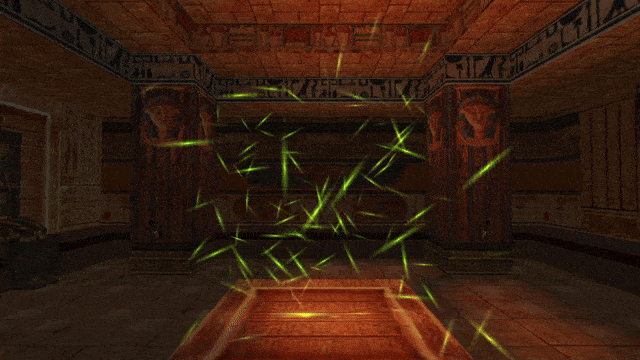
When you pair this with update functions, you can even animate this squeezing and stretching over time (but update functions are something that the next chapter will be concerned with).
When I described the way the color propertiespart.colStart and part.colEnd work, I said that the particles will linearly transition between the start color and end color during their life. As it turns out, this isn’t the full truth of the matter, either. This transistion from the start color to end color can also occur in a shorter duration than the entire lifespan.
The sprite particle property part.colFadeTime describes the duration (in game ticks) over which this color transition will take place. By default, this field is equal to 0. This makes the particles behave exactly as was explained in Chapter 1, i.e. going between part.colStart and part.colEnd during the full part.lifeSpan of the particle. Therfore,
part.colFadeTime = 0
behaves the same as if we put:
part.colFadeTime = part.lifeSpan
Differently, if we set this property to a non-zero value, it can make the particles complete this color transition sooner.
You can set both positive and negative values for this field, though they work differently.
Positive values mean that the particle should begin transitioning immediately after being spawned and end the transition within the duration indicated by part.colFadeTime (which is smaller than part.lifeSpan itself). After completing the transition, the particle remains at part.colEnd for the rest of its life duration. When using positive values, part.colFadeTime must be larger than zero, but less or equal to part.lifeSpan, i.e. satisfy the condition:
0 < colFadeTime <= lifeSpan
It will get clamped to the lifeSpan maximum if you try setting a larger value, anyway. As an example, if you want particles to finish changing color halfway through their life span, you can do:
part.lifeSpan = randint(96, 128)
part.colFadeTime = part.lifeSpan / 2 -- particle will fade color from start to half of lifeSpan
On the other side, we have negative values. These are a bit more awkward, but they mean the particle should start transitioning from part.colStart to part.colEnd when the particle has -(colFadeTime) (the negative of the negative, i.e. positive) game ticks of life left. This means that the particle initially remains at part.colStart and does not begin transitioning into part.colEnd until it has been alive for (lifeSpan + colFadeTime) game ticks, with colFadeTime being some negative integer (thus subtracting from lifeSpan). The particle will complete the whole color transition exactly when reaching the end of its life. The negative values must also satisfy the condition:
0 < -(colFadeTime) <= lifeSpan
part.lifeSpan = randint(96, 128)
part.colFadeTime = -(part.lifeSpan / 4) -- particle color fading will be delayed until the remaining quarter of lifeSpan
This field has a more niche purpose and it isn’t one you will use very often, presumably. It’s mainly there to replicate a very similar functionality in original TR4 particles, which had this color fading time, e.g. used with flame sprites. It gives a limited ability to fine-tune the coloration of your particle effects.
The more robust way to manage the color of particles through their lifetime is using the part.colCust property within update functions, which again, will be explained in the upcoming Chapter 2.
This concludes the main portion of Chapter 1. We have learned about a few more particle properties, discovered how to make particles spawn around moveables with part.emitterIndex and how to replace TRNG AddEffects by making use of the part.emitterNode field.
In the upcoming Chapter 2, we finally delve into the much hyped update functions. Hope to see you there as well!
If you would like to learn how you can still squeeze an extra bit of coolness from just init functions, before moving onto update functions, the bonus section below might be for you. I will warn that you will probably like it more if you enjoy math, at least to some degree. If that does not pique your interest, feel free to move on to the next chapter:
In our dust particle script we have been focusing on for most of Chapter 1, we were spawning the particles randomly within a rectangular box of certain dimensions. Let’s admit that a box is a rather boring shape. By applying some knowledge of math, it’s not difficult to spawn particles in a multitude of different spatial arrangements, such as a cylinder, spiral, helix, sphere, or any other easily defined mathematical shape. We will go through a few examples in the following section.
Cylinder formation
Our objective is to change the spawning shape of the particles from a box to a cylinder with a given radius and height. But a cylinder is round on its sides, how can we generate such circular shapes?
Let’s remind ourselves a bit of math from school. A circle is a 2D shape made up of all points that are an equal distance away from a central point. We call this distance the radius and usually denote it with the letter r.
How do define a circle with radius r? There are two common math equations for it. The first of them involves the coordinates of the circle’s central point (xp, yp) in the following equality:
(x - xp)² + (y - yp)² = r²
All the value pairs of (x, y), which satisfy the above equality, describe the circle of radius r, centered at the point (xp, yp). Unfortunately, this equality of a circle will not be very useful for our purposes, as it does not exactly tell us what x and y are.
Another way of defining a circle is with the trigonometric functions, cos() and sin() and some angle, which we can designate with ang. We use the following equations for getting the coordinates values of x and y:
x = r * cos(ang) + xp
y = r * sin(ang) + yp
As the angle ang sweeps from 0 to 360 degrees (0 to 2π radians), it will trace out the circle of radius r through the x and y coordinates (which are dependant on the value of ang). We can say that the angle ang, defined in the range 0 to 2π, serves as the parametric variable (or parameter) for these equations. Try the interactive demo below to see how it works:
x = r * cos(ang)
y = r * sin(ang)
r 5.0
ang135
These parametric equations for the circle are exactly what we will need to spawn our particles in a ring shape.
If you recall the last chapter, we randomized the position of dust particles with randomly generated numbers in the variables dx, dy, dz.
local dx = randfloat(-512, 512)
local dy = randfloat(-512, 512)
local dz = randfloat(-512, 512)
part.pos.x = dx
part.pos.y = dy
part.pos.z = dz
What we did here is we used the dx, dy, dz variables as offsets from the base position, which could be the position of the emitter object. In this case, we were affecting all 3 dimensions in a completely random way, giving rise to a 3D box inside of which the particles could spawn.
Now, let’s take another look at the parametric equations for the circle:
x = r * cos(ang) + xp
y = r * sin(ang) + yp
and ignore the central point offsets for a moment:
x = r * cos(ang)
y = r * sin(ang)
the x and y offsets are correlated with each other through the variables r for the radius and ang for the angle. If we use a constant value for r, we get a point somewhere on the circle, depending on the provided value for ang. Here’s where we can do something interesting.
Let’s create ang as a variable in Lua and give it a random value between 0 and 2 pi. Of course, to make things easier for ourselves, we can use the degToRad() utility function to specify values in degrees, since the cos() and sin() functions are designed to work with radians, not degrees.
local ang = degToRad(randint(0, 359)) -- get random angle between 0 and 359 degrees
And now we can use the parametric equations for the circle to get the x and y offsets. We can name them cx and cy for our example. We will also use a radius r of 1024. Here’s what we should have:
local ang = degToRad(randint(0, 359)) -- get random angle between 0 and 359 degrees
local rad = 1024 -- radius
local cx = rad * cos(ang)
local cy = rad * sin(ang)
You might notice that we have only two offset variables this time, cx and cy. Without the central point (xp, yp), these variables describe the x and y coordinates of a circle at the origin point (0, 0). In global coordinates, this will very likely be outside of your level map. Remember, about part.emitterIndex, though? If we assign some moveable index to it, the cx and cy positions, assigned to the part.pos coordinates, will be offsets from the moveable object. We’ll rely on this approach.
We have to assign the cx and cy to the x and y of the pos vector. But that’s just one of the options. We could perhaps assign it to z and y. Ultimately, it only depends which direction we want the cylinder to face. If we decide to do this:
part.pos.x = cx
part.pos.y = cy
part.pos.z = 0
then the cylinder’s circumference will be in the XY plane, so it will be vertically oriented. If we instead do this:
part.pos.x = 0
part.pos.y = cx
part.pos.z = cy
then it will also be vertically oriented, but in the ZY plane, perpendicular to the first example. Finally, when we do this:
part.pos.x = cx
part.pos.y = 0
part.pos.z = cy
then it will be in the XZ plane, oriented horizontally.
Okay, now we have a circular ring… what do we do with it? On that one axis that did not receive the circle offsets (cx, cy), let’s calculate a third, random offset with randint() or randfloat(), to create the cylinder’s “side surface”. Let’s assume we decided to go with the circle in the horizontal XZ plane. We will thus add the random offset to the y coordinate, while adding cx to x and cy to z (if this is confusing, rename cy to cz).
Now let’s create a proper particle group and init function around that. The particles we will use will have the bubbles sprite texture (13), a turquise color and no velocity. Also, we’ll use part.emitterIndex to make the particles spawn around an emitter item. I used an invisible CAMERA_TARGET nullmesh with ID 3.
local bubbles
local function bubbleInit()
local part = createSpritePart(bubbles) -- create a particle of the "bubbles" group
part.emitterIndex = getTombIndex(3) -- emitter item with ID 3
part.spriteIndex = 13 -- "bubble" sprite texture
part.fadeIn = 30 -- fade in for 1 second
part.fadeOut = 30 -- fade out for 1 second
end
bubbles = createGroup(bubbleInit, nil)
If we run the above particle effect in the level, we should get a cylindrical ring of turquoise bubbles around the emitter object.
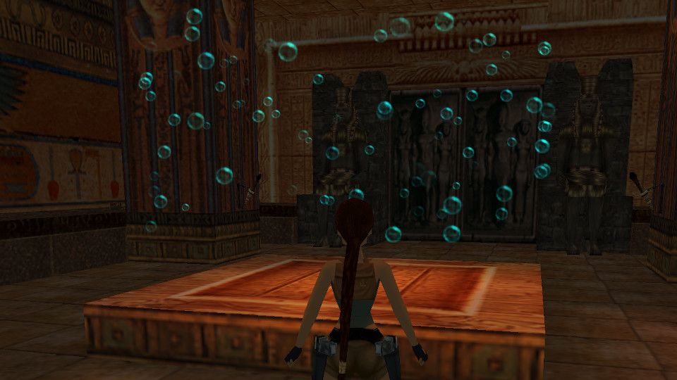
You can now customize the offset variables however you like. For example, we can randomize the r value, which will result in the cylindrical ring having some depth.
local rad = randint(512, 1024)
We can also choose to add some velocity on the Y axis, so the bubbles will travel upwards along the cylinder:
part.vel.y = -16
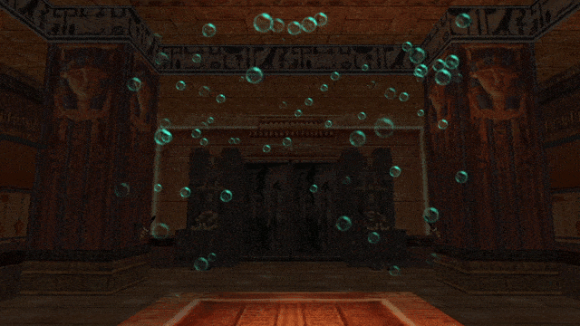
I can picture such bubbles working quite nicely in a circular aquatic tank with fishes or a bio-reactor in a sci-fi research facility… but I shall leave it here. You can add more “flavor” to the effect, if you wish.
The terms spiral and helix are often used interachangably. However, stricly speaking, they mean two different things, at least in the world of mathematics. A spiral is a linear shape that curves (spirals) around a point in 2D, outwards (or inwards, depends on how you look at it). Here are some examples of spirals:
A helix is also a curved linear shape, but one that exists in 3D space. It is more akin to a corkscrew or a vine that wraps around some cylindrical (or cone) shape:
Both have a similar connotation of going round and round, but as you see, they are not quite the same thing.
For this example, we will create an animated helix of particles. Later on, we will make some adjustments to create a spiral effect from it as well.
The circle parametric equations, again
We continue working with parametric equations for a circle. Let’s take another look at how we used them in the cylinder / ring example from earlier:
local ang = degToRad(randint(0, 359)) -- get random angle between 0 and 359 degrees
local rad = 1024 -- radius
local cx = rad * cos(ang)
local cy = rad * sin(ang)
We were picking a random number between 0 and 359 to get a random angle on each frame. But what if this angle was not a random value? Say, if it was derived from the game tick value, for instance.
The getGameTick() function was already brought to our attention. There, we used it to spawn particles at exact time intervals. Albeit this time around, we’ll be using it for a completely different purpose.
What if we assigned the value returned from getGameTick() to the angle variable ang? Let’s examine the following code:
local ang = getGameTick() -- get number of elapsed game ticks
local rad = 512 -- radius
local cx = rad * cos(ang)
local cy = rad * sin(ang)
How will this affect the results we get for the variables cx and cy?
Firstly, we should realize that the trigonometric functions are periodic, meaning they repeat with a certain interval as you give them increasing argument values. Secondly, the trigonometric functions assume that whatever argument we give to them is in radians. So, as the game tick counter starts counting up: 0, 1, 2, 3, 4, … the functions will receive angles of 0 radians, 1 radians, 2 radians… and that’s a very fast increment of angles! As a reminder, a full 360 degree angle is 2 pi radians, so the whole circle path would be completed in a bit over 6 game ticks, way too quickly!
Let’s try to slow it down somewhat. First of all, let’s wrap our getGameTick() call inside a degToRad() call, like so (you can also split it into separate steps / variables, if that makes it more understandable):
local ang = degToRad(getGameTick()) -- get game ticks and convert them to radian values
We’ll analyse how much time it takes to complete the circle now. As the game ticks go up, we get increments of 1 degree to the angle. We can conclude that it will take 360 game ticks to complete the circle. 360 frames divided by 30 fps gives us… 12 seconds! This time around, it’s a tad too slow, if you ask me. Let’s multiply our current result by 6, which should make the circle complete in exactly 2 seconds:
local ang = degToRad(getGameTick()) * 6 -- get game ticks and convert to radian values, multiply by 6
Let’s now integrate the above modifications into a particle effect. If we just use the offsets on static particles with no velocity, the result will be a particle trail that moves along a circle:
local helix
local function helixInit()
local part = createSpritePart(helix) -- create a particle of the "helix" group
part.emitterIndex = getTombIndex(3) -- emitter item with ID 3
-- helical spawning formation
local ang = degToRad(getGameTick()) * 6 -- get game ticks and convert to radian values, multiply by 6
local rad = 512 -- radius
local cx = rad * cos(ang)
local cy = rad * sin(ang)
part.pos.x = cx
part.pos.y = cy
part.pos.z = 0
part.spriteIndex = 11 -- "shine" sprite texture
part.fadeIn = 0 -- no fade in
part.fadeOut = 30 -- fade out for 1 second
end
helix = createGroup(helixInit, nil)
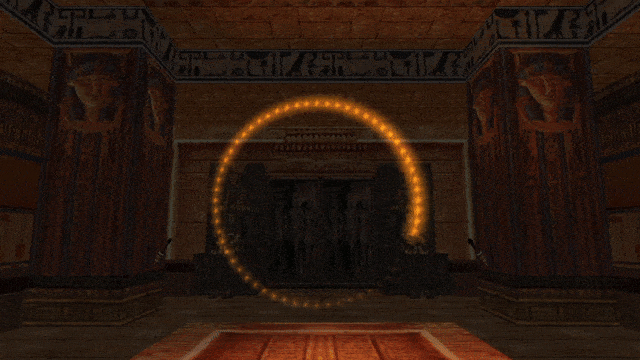
Don’t get me wrong, this is a neat effect on its own (it looks a bit like a “loading” icon), but we specifically wanted a 3D helix. Do obtain one, we need to add velocity on the axis perpendicular to our circle, which in this case is the Z axis. And we’ll extend the lifeSpan by a few more seconds, too:
local function helixInit()
local part = createSpritePart(helix) -- create a particle of the "helix" group
part.emitterIndex = getTombIndex(3) -- emitter item with ID 3
-- helical spawning formation
local ang = degToRad(getGameTick()) * 6 -- get game ticks and convert to radian values, multiply by 6
local rad = 512 -- radius
local cx = rad * cos(ang)
local cy = rad * sin(ang)
part.pos.x = cx
part.pos.y = cy
part.pos.z = 0
part.vel.z = 16 -- velocity on perpendicular Z axis
part.spriteIndex = 11 -- "shine" sprite texture
part.fadeIn = 0 -- no fade in
part.fadeOut = 30 -- fade out for 1 second
end
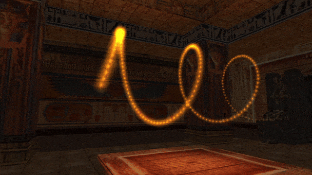
Now that’s what I’m talking about, so pretty!
Here’s an extra tidbit, if we want the helix to converge to the center at the tip, the trick is to use the negatives of cx and cy, divided by part.lifeSpan, as the X and Y velocities, respectively.
part.vel.z = 16-- velocity on perpendicular Z axis
part.vel.x = -cx / part.lifeSpan
part.vel.y = -cy / part.lifeSpan
If we now “flatten” the helix by removing the Z velocity (setting it to 0 or commenting it out) and leave the X and Y velocities as they are, we actually obtain a proper inwards spiral effect, try it out!
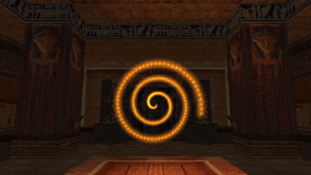
An outwards spiral starting from the center can be done by not offseting the spawn position (spawning from the center 0, 0, 0) and using positive cx and cy for calculating X and Y velocity.
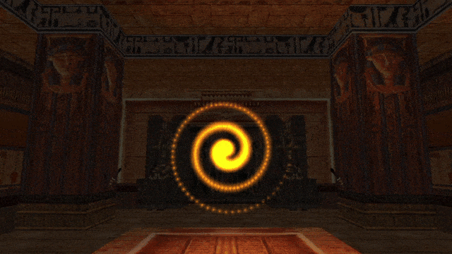
This demonstrates that it is possible to achieve simple “animations” with particles, by being clever with init functions. Of course, it is not the particles themselves that are animating (notice how they are always moving in a straight line!), but the spawn positions of the particles changing over time create a frame-by-frame illusion of “spinning around”.
Making the particles actually travel along the curved helical/spiral path is something that can only be done through update functions (since it requires modifying the particle velocity per each frame). We will return to this topic when we talk about update functions in Chapter 2.
Spherical formation
As our final example, we will examine how you can spawn particles on the surface of and inside a sphere. This can be useful in the creation of “energy shields”, “force fields” and the like, whatever requires a spherical shape.
A sphere is a shape very much related to the circle. It’s like the 3D equivalent of the 2D circle. A sphere is also described by some point (xp, yp, zp) and a radius r, since it’s also a collection of all points at equal distance r from some central point, this time in 3D space. This extra dimension makes things a bit more complicated, though. We’re no longer describing a curve as with a 2D circle, but rather a surface. Unlike the circle’s curve, the parametric equations for a sphere’s surface can’t rely on just a single angle parameter ang. To describe the surface of a sphere parametrically, we need two separate angle parameters. These angles are often denoted with the greek letters θ (theta) and φ (phi). In the code we can call them theta and phi, accordingly.
The first angle, theta, serves the same purpose as with the angle ang in the circle equations, describing the horizontal facing or the azimuth angle. It is an angle in the range 0 to 2 pi (or 0 to 360 degrees). If you imagine the sphere as a globe, theta can also be thought of as the longitude. As the angle theta increases, you are travelling along the perimeter of the globe.
The second angle, phi, describes the elevation or the polar angle from the plane on which the central point rests (it’s called the polar angle because it brings you from the north pole to the south pole, or vice-versa). It is often in the range between -pi/2 and pi/2 (-90 to 90 degrees). With the globe analogy, phi can also by thought of as the latitude. At phi = 0, you’re on this globe’s equator and at the extreme ends of -pi/2 and pi/2 you’re at the south pole or north pole, respectively (which pole is which depends purely on convention, however).
Since we’re now dealing with 3D space, you may figure that we will be obtaining X, Y and Z coordinates from a set of parametric equations. What are these equations?
x = r * cos(theta) * sin(phi)
y = r * cos(phi)
z = r * sin(theta) * sin(phi)
Huh, these are harder to follow than the ones for the circle, aren’t they? Don’t worry, they only look more intimidating with those extra multiplications. The bottom line is that we don’t generate just a single angle value, but in fact two separate ones, theta and phi.
If were working up a cold sweat over these equations already, I have some good news for you. We don’t need to use these parametric equations directly in code (but if you really want to, go for it!). The API provides a function called cartesianFromSpherical(). This function takes 3 arguments:
cartesianFromSpherical(r, theta, phi)
The arguments represent the sphere’s radius r and the angles theta and phi. It returns a vector3D object corresponding to the cartesian (X, Y, Z) coordinates for the given radius, theta and phi. This makes obtaining the right values for X, Y and Z much easier.
Alright, we know we can pick any (positive) value for the radius, but what about the angles? Well, I already outlined the ranges expected for both phi and theta earlier.
For phi we need an angle between 0 and 360 degrees. We can simply copy what we did for the cylindrical formation from before. We can also including float values in-between:
local phi = degToRad(randfloat(0, 360)) -- get random angle between 0 and 360 degrees
For theta, it’s a different matter. We need an angle between -90 and 90 degrees. This is also very straightforward:
local theta = degToRad(randfloat(-90, 90)) -- get random angle between -90 and 90 degrees
Now we just need to combine it with a particle effect to test it out. Here is what I used, I decided to spawn several short-lived particles per frame by using a helper function with a for loop (recall the subject of manipulating particle spawnrates in Chapter 1):
local sphere
local function sphereInit()
local part = createSpritePart(sphere) -- create a particle of the "sphere" group
part.emitterIndex = getTombIndex(3) -- emitter item with ID 3
local function sphereMain()
for i = 1, 5 do
sphereInit()
end
end
sphere = createGroup(sphereMain, nil)
As you see, in the lines:
local vec = cartesianFromSpherical(rad, phi, theta)
part.pos = vec
we called the cartesianFromSpherical() function with arguments rad, phi and theta. The returned vector with cartesian coordinates was saved as vec. Then we assign vec directly to part.pos, which is possible because vec itself holds a 3D vector object. Of course, since we’re also using emitterIndex to assign an emitter object, part.pos will serve as an offset from the object’s position.
Let’s check out what we ended up with in game.
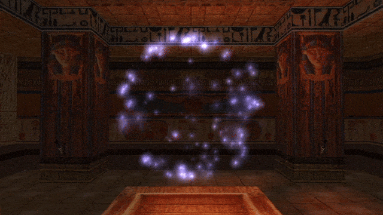
Well, it’s not bad, but…
Pay close attention to the density of the particles around the of the sphere at the top and on the bottom. It’s hard to notice, but on average, they appear to be slightly more concentrated there than around the “equator”. I think it would look better if the distribution was more even across the whole sphere. To explain how to solve this, we need to first make an observation on why this happens in the first place.
Observe that when you’re closer to the poles of a spherical globe, as you change phi (the longitude), you travel along a much smaller “circle”, compared to when you’re near the equator. In our current formulas for getting a random theta (the latitude), we have an equal possibility of getting any possible latitude:
local theta = degToRad(randfloat(-90, 90)) -- get random angle between -90 and 90 degrees
What this means is that there is an equal chance to get any latitude angle between -90 and 90. Notice that does not result in an even distribution of points on the sphere, since near the north and south “poles” the points are more “clumped” together. Instead, what we would need to do is calculate not an even (uniform) distribution, but rather, a normal distribution. A normal distribution is described by the bell curve, then get the appropriate angle back from them and feed them to the cartesianFromSpherical() function.
This sounds scary and difficult, but in reality it’s a lot easier than it sounds. We simply have to apply the inverse-sine function asin(), which takes a value between -1 and 1 (the output range of the normal sin()) and it will return the appropriate angle value.
Perhaps this all sounds esoteric to people without a strong mathematical background, but if that’s the case, don’t worry. This is the one situation where I’ll explicitly allow you a copy-paste!
The change is very simple, for theta, we generate a randfloat() between -1 and 1 and apply the asin() on it:
local theta = asin(randfloat(-1, 1))
With the above line, theta will receive an angle between -pi/2 and pi/2 as before, but the distribution of angles will not be even across the whole range. Instead, as you approach one of the poles, the likelyhood of getting that angle is less and less, while angles around the equator have the heighest likelyhood. In principle, this should result in an even distribution of points across the entire sphere surface. Let’s test it again to see if that’s actually the case.
local function sphereInit()
local part = createSpritePart(sphere) -- create a particle of the "sphere" group
part.emitterIndex = getTombIndex(3) -- emitter item with ID 3
Indeed, although it’s very subtle, the points appear to spawn more evenly now, as evident by the lack of “clumping” around the poles.
Okay, so we are able to spawn points on the sphere’s surface, but what about its volume, filling up the sphere with particles? Let’s do the first thing that comes to mind and simply generate a random radius value from 0 to our max radius 768, with equal distribution:
local r = randfloat(0, 768) -- random radius
If we test this, we yet again see there’s something off… the points are mostly “clumping” near the center of the sphere and get less dense towards the surface.
We’ve fallen for yet another trap of mathematics, because this is not the correct way to evenly distribute points within the sphere’s volume. Instead, what we should do is make the point distribution depend on the cube root (root of degree 3) of the distance from the center. The cube root function is cbrt():
local r = 768 * cbrt(randfloat(0, 1)) -- max radius multiplied by cubic root of random float 0 - 1
Now, let’s put it all together:
local function sphereInit()
local part = createSpritePart(sphere) -- create a particle of the "sphere" group
part.emitterIndex = getTombIndex(3) -- emitter item with ID 3
-- spawn on spherical surface
local r = 768 * cbrt(randfloat(0, 1)) -- max radius multiplied by cubic root of random value 0 - 1
local phi = degToRad(randfloat(0, 360))
local theta = asin(randfloat(-1, 1))
local vec = cartesianFromSpherical(r, phi, theta)
part.pos = vec
The points now spawn evenly within the whole volume of the sphere (it’s hard to see on the gif, but more noticeable in-game).
As you have witnessed, you can leverage math skills to create very neat patterns and shapes of particles, or even achieve some pseudo-animation, as was show with the helix and spiral examples. Do not always “go by the book” with particle effects. You are encouraged to experiment with different ideas and think outside the aformentioned rectangular box!


 How do define a circle with radius r? There are two common math equations for it. The first of them involves the coordinates of the circle’s central point (xp, yp) in the following equality:
How do define a circle with radius r? There are two common math equations for it. The first of them involves the coordinates of the circle’s central point (xp, yp) in the following equality: